未来商业领袖可持续发展协会FBSD Foundation Limited
FBSD Foundation Limited
承接联合国贸发会议全球倡议 · 立足香港 · 连接全球商业领袖Carrying forward the UNCTAD global initiative · Based in Hong Kong · Connecting business leaders worldwide
四项原则Four principles
可持续增长Sustainable growth
以长期价值创造衡量经营成果。Measure performance by long-term value creation.
环境守护Environmental stewardship
把气候与资源约束纳入投资和运营决策。Bring climate and resource limits into investment and operations.
社会包容Social inclusion
让员工、社区与供应链分享增长。Share growth with workers, communities and supply chains.
良善治理Good governance
以透明、问责和制度安排保障代际交接。Use transparency, accountability and rules for succession.
四条主线Four lines of work
落地路径How it is put to work
- 签署承诺Sign the pledge确认四项原则。Commit to the four principles.
- 建立指标Set indicators用可持续发展指标衡量进展。Measure progress with the indicator set.
- 能力建设Build capacity培训、报告辅导与跨代对话。Training, reporting support and cross-generation dialogue.
- 公开披露Disclose承诺可在全球平台刊登。The pledge can be listed on the global platform.
签署与填报在 联合国贸发会议托管的全球平台 完成。本网站作中文导引，不另建填报系统。Signing and reporting happen on the UNCTAD-hosted global platform. This site guides participants in Chinese and does not run a separate reporting system.
加入中国网络Join the China Network
创始理事由创始人及获邀的创始机构与个人组成，承担治理职责。机构会员和个人会员经申请及邀请、由理事会确认。招募已经启动，首批计划于 2027 年一季度到位。会员支持网络宗旨，并鼓励签署《承诺2030》。Founding council places are held by the founders and invited founding institutions and individuals, and carry governance duties. Institutions and individuals join by application and invitation, confirmed by the council. Recruitment has started, with the first group planned for the first quarter of 2027. Members support the network’s purpose and are encouraged to sign the 2030 Pledge.

全球视角Global perspective
立足中国
对话世界Rooted in China
Dialogue with the world
以开放的视野理解全球议题，以本地的经验探索行动路径。我们希望让中国的实践与国际讨论相互启发。Read global issues with an open view, and look for a path of action in local experience. We want practice in China and international discussion to inform each other.
- 全球视野A global view
- 中国议题China’s agenda
- 跨界对话Dialogue across fields
此处表达合作方向，不代表已建立合作关系或获得任何机构授权。This describes a direction for cooperation. It does not mean a partnership exists, or that any institution has granted authority.
SHARED
HORIZONS